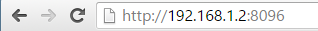

Verbindung von Client-Apps
Zweck dieses Dokuments ist es, zu erläutern, wie Sie von zusätzlichen Geräten aus, sowohl innerhalb als auch außerhalb Ihres Heimnetzwerks, auf den Emby Server zugreifen können. Um zu erfahren, wie Sie Benutzern den Zugriff auf Ihren Server gewähren können, siehe Benutzer.
In den meisten Fällen müssen Sie nichts tun, um von anderen Geräten aus eine Verbindung zu Ihrem Server herzustellen, da Emby-Apps so gebaut sind, dass sie automatisch wissen, wie sie sich verbinden. Auf einigen Systemen kann jedoch eine manuelle Konfiguration erforderlich sein. Dieses Dokument ist in erster Linie als Fehlerbehebung gedacht, wenn die automatischen Funktionen nicht funktionieren.
Verbindungen im Netzwerk
Die meisten Emby-Apps können Ihren Emby Server in Ihrem Heimnetzwerk automatisch entdecken, sodass in diesen Fällen keine weiteren Schritte erforderlich sind. Sollte dies nicht funktionieren, können Sie den Emby Server manuell durch Eingabe der Serveradresse verbinden.
Um die interne Adresse Ihres Servers zu finden, öffnen Sie einfach das Emby Server Dashboard auf dem Emby Server Rechner, typischerweise http://localhost:8096
Die lokale Adresse Ihres Emby Servers wird dann im Feld Lokale Adresse angezeigt.

Diese Informationen können dann in Emby-Apps eingegeben werden:

Es wird empfohlen, dass die lokale IP-Adresse für den Emby Server Rechner festgesetzt wird. Verwenden Sie die DHCP-Reservierungsfunktion des Routers, um dies zu tun. Hier ist eine allgemeine Anleitung dazu. https://portforward.com/dhcp-reservation/#how-to-make-a-dhcp-reservation-in-your-router
Wenn Sie ein VPN auf Ihrem Router laufen haben, erscheinen die Anfragen, die aus dem lokalen Netzwerk auf den Server eingehen, möglicherweise nicht als lokal. Es wäre dann notwendig, die Netzwerkeinstellungen "Erlaube Remote-Verbindungen zu diesem Emby Server" zu aktivieren. Wenn kein tatsächlicher externer Zugriff erforderlich ist, sollten Sie sicherstellen, dass "Automatische Portzuordnung aktivieren" in den Netzwerkeinstellungen des Servers deaktiviert ist und keine manuelle Portweiterleitung im Router hinzugefügt wird. Die Option "Erlaube Remote-Verbindungen zu diesem Emby Server" muss auch in den Benutzereinstellungen aktiviert sein.
Fehlerbehebung bei internen Verbindungen
Wenn das Obige immer noch nicht funktioniert, stellen Sie bitte sicher, dass der Rechner, auf dem Emby Server läuft, eingeschaltet ist und dass die Emby Server Anwendung ausgeführt wird.
Ein nützlicher Test ist es, zu versuchen, einen Webbrowser auf einem anderen Gerät, wie einem anderen Computer, Smartphone oder Tablet, zu verwenden. Sie müssen sicherstellen, dass das andere Gerät mit demselben WLAN-Netzwerk verbunden ist. Versuchen Sie, auf diesem Gerät einen Webbrowser zu öffnen und die lokale Adresse manuell einzugeben:

Wenn dies immer noch nicht funktioniert, blockiert höchstwahrscheinlich die Firewall auf dem Serverrechner den Zugriff. Unten finden Sie eine Liste von Schritten zur Fehlerbehebung, die zur Lösung führen können.
Öffnen Sie TCP-Port 8096 in der Firewall Ihres Servers
Wenn Sie Windows verwenden, müssen Sie höchstwahrscheinlich die Windows-Firewall konfigurieren. Siehe Wie man einen Port in der Windows-Firewall öffnet.
Wichtig: Bitte versuchen Sie nicht, diesen Schritt zu überspringen, indem Sie die Windows-Firewall deaktivieren, da dies normalerweise mehr schadet als nützt.
Wenn Sie Softwarefirewall von Drittanbietern verwenden, müssen Sie deren Anweisungen folgen, um den Port zu öffnen. Hinweis: Wenn Sie Antivirus-Software von Drittanbietern wie Norton Internet Security verwenden, wird diese vermutlich über eine eigene Firewall verfügen, die konfiguriert werden muss.
Führen Sie einen Antivirus-Scan durch
Wenn Sie sicher sind, dass Sie den Port geöffnet haben und immer noch keine Verbindung herstellen können, sollte der nächste Schritt darin bestehen, sicherzustellen, dass der Serverrechner frei von Viren und Malware ist. Siehe Antivirus-Software.
Externe Verbindungen
Emby Server ermöglicht es Ihnen auch, sich von außerhalb des Hauses zu verbinden. Diese Verbindungen nennen wir externe Verbindungen, weil sie außerhalb unseres Heimnetzwerks liegen. Bevor wir beginnen, nehmen wir an, dass alles behandelt wurde, was im Abschnitt Verbindungen im Netzwerk zu Ihrem Emby Server funktioniert, und dass Sie in der Lage sind, sich mit anderen Geräten in Ihrem Heimnetzwerk zu verbinden. Wenn nicht, sollten Sie diesen Abschnitt zuerst durchgehen.
Der Artikel Remote Setup behandelt, wie der Fernzugriff ermöglicht wird und die Option für die automatische Portweiterleitung über die uPnP-Funktion des Routers.
Externe Adresse lokalisieren
Ihre externe Adresse wird auf der Startseite des Server-Dashboards mit dem Label Fernzugriff angezeigt. Dies ist die Adresse, die Sie verwenden sollten, wenn Sie nicht zu Hause sind.
Externe Adresse testen
Die einfachste Möglichkeit, Ihre externe Adresse zu testen, besteht darin, sie in einem Webbrowser zu öffnen, wenn Sie nicht zu Hause sind, oder innerhalb Ihres Zuhauses mit einem Smartphone oder Tablet, bei dem die WLAN-Verbindung ausgeschaltet ist.
Wichtig: Das Testen Ihrer externen Adresse innerhalb Ihres Zuhauses funktioniert möglicherweise nicht, was in Ordnung ist. Einige Internet-Router deaktivieren die Loopback-Fähigkeit (hinausgehen und zurückkommen), daher könnten Sie dies von Ihrem Heimnetzwerk aus nicht testen. Es ist wichtig, dass Sie von außerhalb des Hauses testen oder mit der ausgeschalteten WLAN-Verbindung von Smartphone oder Tablet.
Wenn die externe Adresse in einem Browser funktioniert, sind Sie bereit, fortzufahren und sich von Emby-Apps aus zu verbinden.
Portweiterleitung einrichten
Wenn Sie nach dem Testen oben immer noch keine Verbindung herstellen können, müssen Sie möglicherweise die Portweiterleitung über Ihren Router einrichten, um externe Verbindungen zu Ihrem Emby Server zu ermöglichen.
Deaktivieren Sie hierfür die zuvor aktivierte "Automatische Portweiterleitung aktivieren" Option und öffnen Sie die Weboberfläche Ihres Routers. Sie müssen TCP-Port 8096 auf Ihrem Router zu Port 8096 auf dem Emby Server Rechner weiterleiten. Dasselbe gilt auch für Port 8920 (wenn SSL verwendet wird). Es ist wichtig, dass sich die lokale IP-Adresse für den Emby Server Rechner nicht ändert. Verwenden Sie die DHCP-Reservierungsfunktion des Routers dafür.
Wenn Sie unterschiedliche öffentliche Portnummern verwenden möchten, siehe Netzwerk-(Hosting-)Einstellungen. Wenn Sie mehr als einen Emby Server in Ihrem lokalen Netzwerk haben und die manuelle Portweiterleitung erforderlich ist, müssen die Standard-öffentlichen Portnummern geändert werden, da jeder Server eine andere öffentliche Portnummer haben muss.
Wenn Sie mehr als einen Router haben, z.B. einen vom ISP bereitgestellten Router und auch einen eigenen Router, würde dies zu einem Double NAT führen, was dazu führen würde, dass der Server von außen nicht erreichbar ist. In solchen Fällen wird empfohlen, einen Router, z.B. den ISP-Router, im Modem/Bridge-Modus zu betreiben. Wenn beide als Router betrieben werden müssen, wird die Konfiguration komplexer. Dabei muss der Portforward für den öffentlichen Port von einem Router zum anderen weiter verwaltet werden, wobei die tatsächliche Portweiterleitung am zweiten Router erfolgt. Auch der zweite Router muss als DHCP-Reservierung auf dem ersten Router konfiguriert sein.
Der Vorgang der Portweiterleitung wird für jedes Routermodell etwas unterschiedlich sein. Hier finden Sie gute Schritt-für-Schritt-Anleitungen, wie man dies durchführt:
https://portforward.com/dhcp-reservation/#how-to-make-a-dhcp-reservation-in-your-router http://www.wikihow.com/Set-Up-Port-Forwarding-on-a-Router
Dieses Youtube-Video erklärt es auch ziemlich gut:
https://www.youtube.com/watch?v=Kp-R-eHiQco
Öffentlichen Port überprüfen
Um zu testen, ob Ihr öffentlicher Port über das Internet zugänglich ist, versuchen Sie, ihn von canyouseeme.org zu testen.
Wenn dieser Test nicht erfolgreich ist, ist das ein Anzeichen dafür, dass Ihr Router den Datenverkehr blockiert und möglicherweise eine zusätzliche Konfiguration erfordert.
Wenn der Test erfolgreich ist, das Gerät jedoch nicht in der Lage ist, sich extern mit dem Server zu verbinden, überprüfen Sie, ob Sie den Fernzugriff für den Benutzer aktiviert haben. Siehe Benutzer.
Remote-Zugriffs-Konfiguration
Sehen Sie sich den folgenden Link für detaillierte Anweisungen zur Einrichtung des Fernzugriffs auf Emby Server an Remote Setup.
Emby Connect
Unabhängig von der verwendeten Methode zur Portweiterleitung, ob es automatisch mit uPnP oder manuell über den Router konfiguriert wird, empfehlen wir die Verwendung der Emby Connect Funktion, da sie die Unsicherheiten bei der externen Verbindung nimmt. Die Emby-Apps würden den Weg zum Server über Emby Connect finden. Siehe Emby Connect.